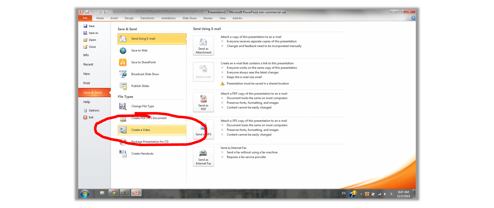
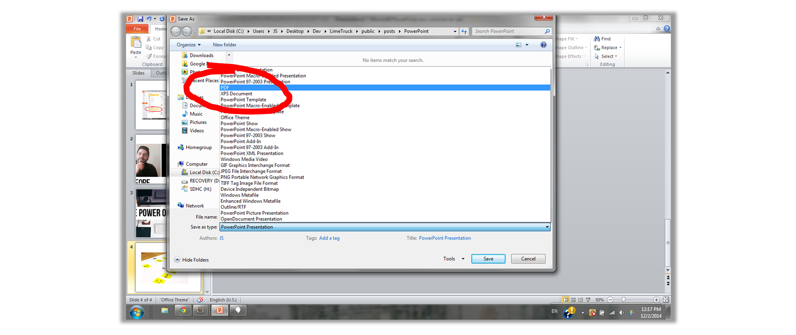

Except for the music, the video above was created entirely in PowerPoint using a combination of slide transitions and animations. To create a video, set timings for all the transitions, then when saving, simply hit "Create a Video"! You can even record a voice-over.
PowerPoint allows you to easily change brightness, contrast, coloring, remove backgrounds, add artistic effects, etc. The pic above was edited entirely in PowerPoint by removing the background from the original picture, adding a black background, changing the coloring to black and white, increasing both brightness and contrast, adding text, and adding an image of glasses.
The product shown above is a Goal Board, which was designed entirely in PowerPoint, then saved as a PDF for printing. The creators sold over $20,000 worth of the product in the first month of launch, and production was as easy as sending the PDF to a poster printer!
